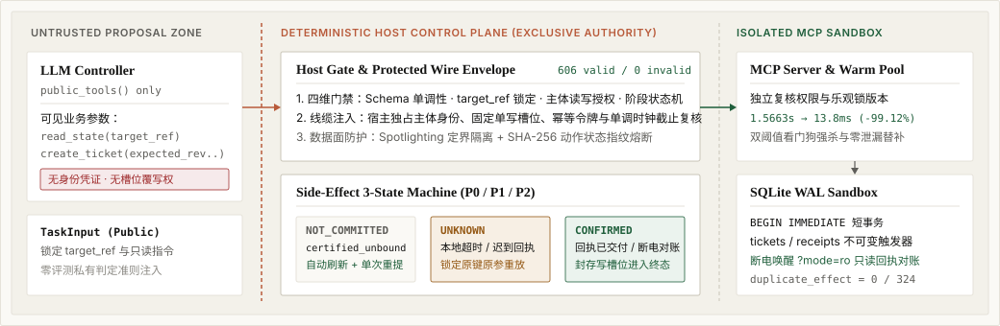

Harness Reliability Lab
面向具备外部写副作用的智能体工具调用系统，将大语言模型输出隔离为不可信提案，由确定性宿主控制面独占身份凭证、单写槽位、幂等回执与恢复状态机的可靠性实证工程。
阅读导览：在线五幕交互专著 · 控制面与协议规范 · 实证评估报告 · 公开脱敏证据账本 · 工程纪律契约

1. 核心工程贡献总览
当工具调用涉及数据库写入、工单派发或权限变更时，网络超时、并发状态失效与外部脏数据注入无法靠提示词工程单独解决。本仓库以确定性控制面为基座，通过冻结配对实验与六组控制面扩展完成端到端闭环验证：
- 副作用零越界与跨断电自愈：在
324次配对主基准运行与24次模拟断电续跑中均保持0越权、0重复写；并发状态版本失效场景下实现100%确权恢复（0/18 → 18/18）。 - 本地与推理双端延迟削峰：常驻热沙箱池消除
99.12%子进程冷启动开销（1.5663s → 13.8ms）；揭示并对齐56 + 256k前缀缓存页边界、统一原生工具输出通道后，单题平均推理耗时降低48.67%。 - 高压上下文防爆与纵深防御：在
>24.5 KB多分片状态与12份领域规程高压场景下，落盘切片读取与只读子智能体架构将主上下文峰值输入词元压降92.53%，并阻断间接提示词注入与死循环空转（环路词元减少61.73%）。 - 防作弊过程审计与后训练飞轮：步级因果过程评分器
100%拦截纯结果评分器漏判的16/20伪满分作弊轨迹，并在16项负向脱敏红线下安全导出监督微调、同前缀偏好对与过程奖励样本。
2. 冻结配对主基准（324 Runs）
主基准在 18 道冻结任务（6 道并发版本失效题 + 12 道常规/超时/权限控制题）上，对两款模型端点分别测试三档递进恢复策略——零重试单次执行基线（P0）、未知提交态下的同槽位原参数幂等重放（P1），以及服务端确权该写槽位尚未产生任何提交或绑定（certified_unbound=true）后的宿主自动刷新与单次修正重提（P2）。全批 324 个槽位、54 个配对区组均单次执行封存，外部 API 异常为 0，810 次线缆请求帧全部闭合对账：
| 模型与策略档位 | 正确处置 /54 | 并发版本失效 /18 | 控制组 /36 | 目标完成 /36 | 失效组 / 控制组 pass^3 | 每净增恢复墙钟代价 |
|---|---|---|---|---|---|---|
A-P0 (deepseek-flash · 零重试) | 24 (44.4%) | 0 | 24 | 6 | 0/6 · 8/12 | — |
A-P1 (deepseek-flash · 同键幂等重放) | 36 (66.7%) | 0 | 36 | 18 | 0/6 · 12/12 | 基线对照 |
A-P2 (deepseek-flash · 确权刷新重提) | 54 (100.0%) | 18 | 36 | 36 | 6/6 · 12/12 | +2.371s |
B-P0 (doubao-seed-2-1-lite-260915 · 零重试) | 24 (44.4%) | 0 | 24 | 6 | 0/6 · 8/12 | — |
B-P1 (doubao-seed-2-1-lite-260915 · 同键幂等重放) | 36 (66.7%) | 0 | 36 | 18 | 0/6 · 12/12 | 基线对照 |
B-P2 (doubao-seed-2-1-lite-260915 · 确权刷新重提) | 53 (98.1%) | 18 | 35 | 36 | 6/6 · 11/12 | +6.405s |
3. 控制面扩展实证汇总
针对主基准暴露的本地子进程冷启动、跨模型推理延迟差（占两模型总墙钟差值的 99.99%）以及单引号字典词法退化，在不改动任何冻结源码与主基准产物的条件下完成六组扩展实验：
| 演进方向与模块代号 | 核心控制面机制 | 实测规模 | 关键定量结果 |
|---|---|---|---|
常驻热沙箱池 (M1A) | JSON-RPC 会话多路复用 + 管道挂死双阈值看门狗强杀替补 | 36 对配对运行 | 启动中位数 1.5663s → 13.8ms（-99.12%），决策 100% 一致 |
断电无状态唤醒 (M1B) | ?mode=ro 只读挂载 SQLite 回执表与截断日志四象限因果对账 | 24 次断电续跑 | 24/24 终态签名一致，6/6 已提交回执直恢复，0 重复写 |
缓存页对齐与思考调控 (M2A+M3) | 揭示 56 + 256k 缓存页规律；动静分离 + 强制工具通道 + p_rec < 45% 盈亏律 | 64 次运行 (244 请求) | 未见新题首轮缓存命中率 75.01% / 96.66%；推理耗时 -48.67%，0 格式错误 |
上下文虚拟化与只读子智能体 (M2B+M4) | >4 KB 溢出落盘分页读取 + 按需规程加载 + can_write=False 巡检子智能体 | 18 次高压运行 | 全量内联 0/6 阻断 → 虚拟化子智能体 6/6 完成，主峰值词元 -92.53%，写探测 6/6 拒绝 |
数据面定界与环路熔断 (M5) | state.facts 双层不可信定界符 + SHA-256 动作状态指纹熔断器 | 16 次红队运行 | 越权写恒为 0，4/4 注入零诱导，死循环输入词元 -61.73% |
三级过程审计与后训练导出 (M6) | 区分洁净轨迹、有效卫生瑕疵与五类作弊；导出掩码微调与同前缀偏好对 | 60 轨迹 + 38 导出样本 | 作弊拦截精确率/召回率双 1.0（纯结果评分漏判 16/20），折扣回报 1.792 > 1.741 > -0.606 |
4. 仓库分层目录与免密钥 5 秒核验
| 目录或路径 | 职责边界与冻结纪律 |
|---|---|
src/harness_lab/ | 零字节冻结运行时内核：控制面状态机、四维门禁、MCP 单协程会话管理、单调时钟与 SQLite 不可变回执表 |
specs/ · tasks/frozen/ | 零字节冻结契约规格（replication-v1.json、replication-v2.json）与 18 道确定性沙箱诊断题集 |
evals/ | 独立协议/门禁/结果审计器、延迟与探针诊断、后训练安全导出、扩展实验套件及离线总审计入口 evals/verify_all/ |
docs/ | 两份正交深度报告：控制面与协议规范 与 实证评估报告 |
site/ | 五幕交互专著及自动生成的静态阅读页。离线阅读可双击 site/index.html。 |
tests/ | 全离线确定性回归测试套件（覆盖跨层依赖边界、线缆超时、看门狗自愈、断电对账、静态站编译同步与脱敏门禁） |
所有离线核验均在零外部 API 调用、零 .env 密钥与锁定依赖下运行：
uv sync --frozen --group dev
uv run --frozen --no-env-file harness-lab doctor
uv run --frozen --no-env-file python -m evals.verify_all --ci
uv run --frozen --no-env-file pytest -c pyproject.toml当工作区包含完整原始 artifacts/ 目录时，可执行全量重评分、SHA-256 树对账，并确定性再生成公开账本与全部 site/*.html 配套静态页：
uv run --frozen --no-env-file python -m evals.verify_all --export-ledger
uv run --frozen --no-env-file harness-lab replay --trace artifacts/replication-v2-2026-11-17/blocks/b01-acc-05-r1-B/P2/trace.jsonl